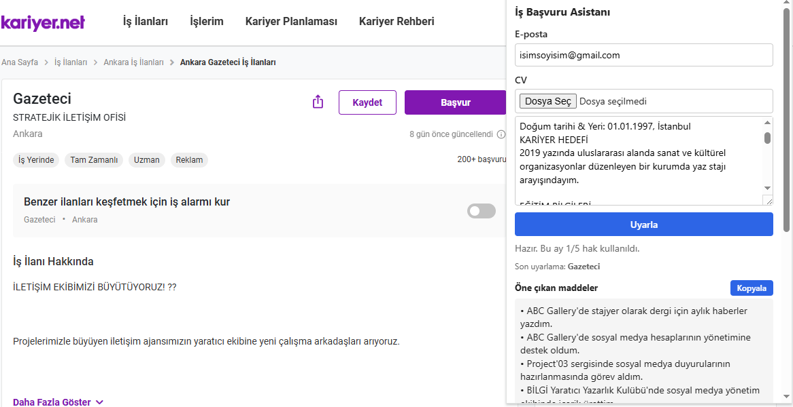
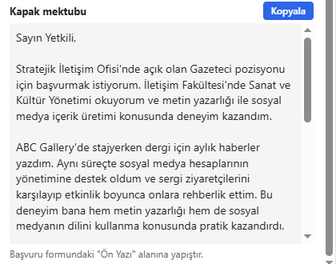
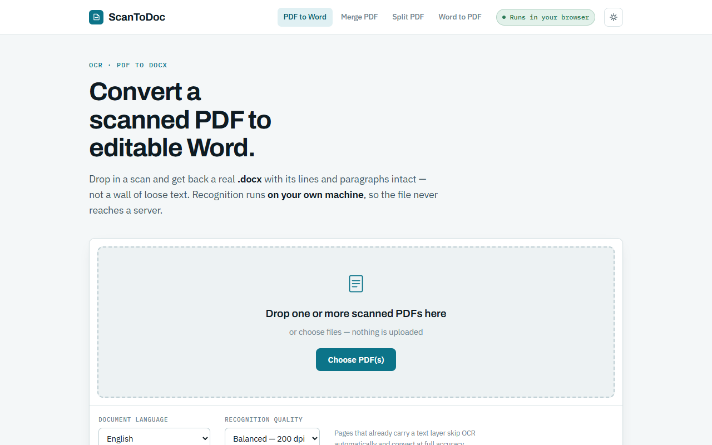
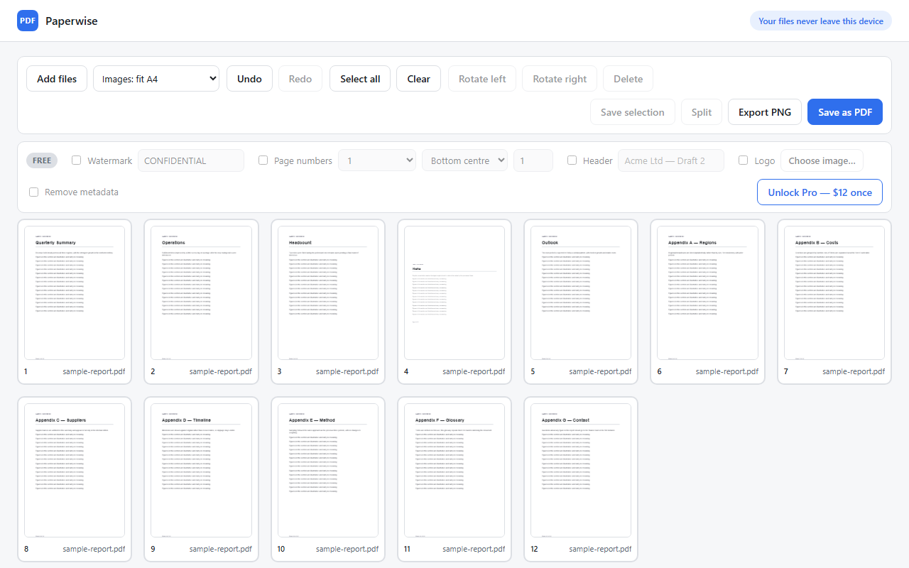
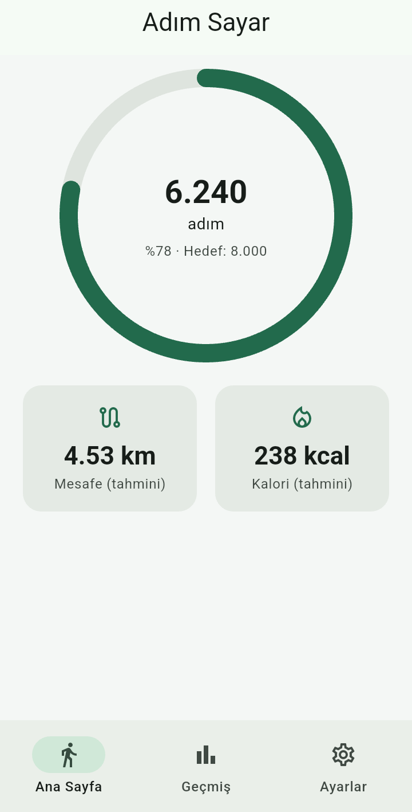
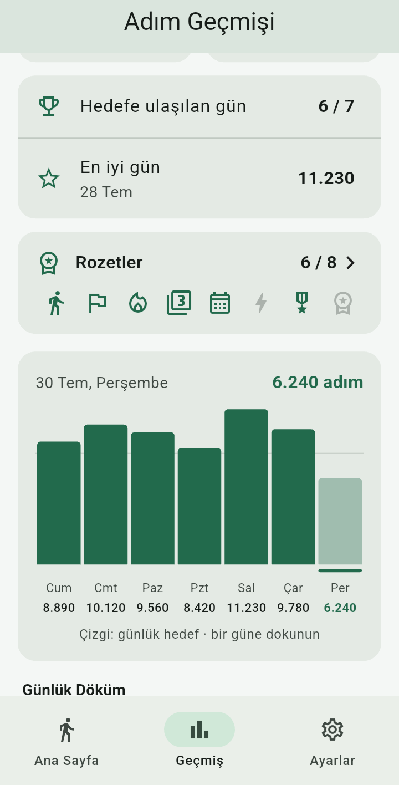
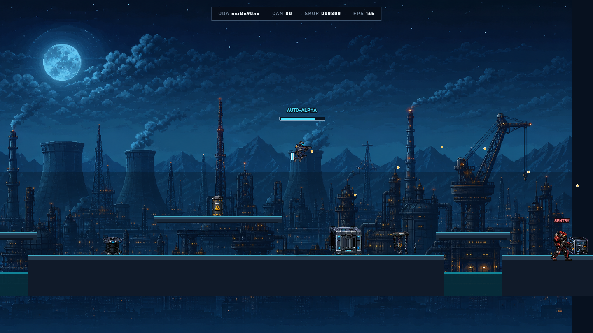

Yapay zekâ entegrasyonu, Chrome uzantıları, otomasyon ve hızlı web siteleri geliştiriyorum. Ürünler bölümündekiler hayali örnek değil; kendim tasarlayıp kodladığım, çalışan yazılımlar.
İhtiyacınızı yazın; hangisinin işinizi çözeceğini birlikte netleştirelim.
🤖 Yapay zekâ entegrasyonu
E-posta yanıtlama, metin/doküman özetleme, form ve CV işleme gibi işleri ChatGPT/Claude ile otomatikleştiririm.
🧩 Chrome uzantısı
Her gün aynı siteyle uğraşıyorsanız, o işi tek tıka indiren özel bir tarayıcı eklentisi.
⚙️ Otomasyon & bot
Excel, PDF ve web verisiyle yapılan tekrarlı işler için script ve botlar.
🌐 Web sitesi & araç
Hızlı, mobil uyumlu tanıtım siteleri ve tarayıcıda çalışan web araçları.
Ürünlerim
Fikirden yayına kadar tek başıma geliştirdiğim projeler.

Yapay Zekâ · Chrome Uzantısı
İş Başvuru Asistanı
Kariyer.net veya LinkedIn'de açtığınız ilanı okur, CV maddelerinizi o ilana göre uyarlar ve kapak mektubu yazar.
Sayfadaki ilanı otomatik okuyan uzantı
Claude API ile çalışan, canlıda olan sunucu tarafı
Ücretsiz kullanım limiti ve bekleme listesi altyapısı
Chrome MV3Cloudflare WorkersClaude APIKV


Web Aracı · OCR
ScanToDoc
Taranmış PDF'i düzenlenebilir Word dosyasına çevirir. Birleştirme, bölme ve Word'den PDF'e araçları da var.
Metin tanıma tamamen tarayıcıda çalışır, dosya hiçbir sunucuya gitmez
Satır ve paragraf yapısını koruyan .docx çıktısı
Sunucu maliyeti sıfır
Tesseract.jsPDF.jsdocxWeb Worker

Chrome Uzantısı · Yakında Web Mağazası'nda
Paperwise
PDF birleştirme, bölme, döndürme ve sayfa sıralama; görselleri PDF sayfasına çevirme. Hepsi cihazda, yükleme yok.
Sürükle-bırak sayfa düzenleme
Pro özellikler için lisans doğrulama (Gumroad)
Otomatik tarayıcı testleriyle korunan kod
Chrome MV3pdf-libPDF.jsPlaywright


Mobil Uygulama · Yakında Google Play'de
Adım Sayar
Ücretsiz, Türkçe adım sayar: günlük hedef, haftalık ve aylık grafikler, rozetler, koyu tema.
FlutterAndroid

Tarayıcı Oyunu · Online Co-op
Iron Pulse
1-4 oyuncunun tarayıcıdan birlikte oynadığı gerçek zamanlı aksiyon oyunu. Oyun sunucusu, ağ senkronizasyonu ve özgün piksel sanat dünyası dahil uçtan uca geliştirildi.
Gerçek zamanlı online çok oyunculu oda sistemi
İki tarayıcıyla gerçek oturum açan otomatik oynanabilirlik testi
TypeScriptWebSocketVite
Oyun · Çok Oyunculu
Co-op Survivors
Tarayıcıda 1-4 kişi online oynanan aksiyon oyunu. Farklı bilgisayarlardaki oyuncuları senkron tutan deterministik simülasyon ve lockstep ağ kodu; karmaşık, gerçek zamanlı sistemleri de uçtan uca kurabildiğimin göstergesi.
TypeScriptWebGL / PixiWebSocket
Web tasarım örnekleri
Küçük işletmeler için hazırladığım örnek tek sayfa siteler. Telefonunuzdan açıp bakın.